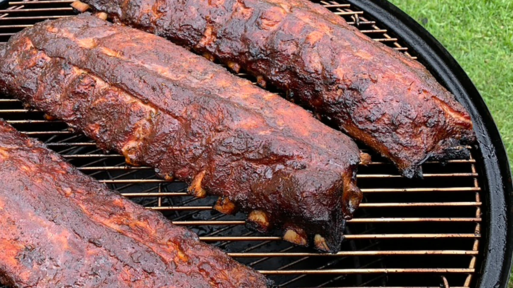

Smoked Ribs

Ingredients
- Pork Baby Back Ribs
- mustard, or binder of your choosing
- barbque rub of your choosing
- apple cider vinegar
- butter
Cooking Directions
-
Prep your meat by peeling off the membrane from the Back
side, easly peeled by picking up the edge with a knife and
using a paper towel to gain grip
-
Lather mustard or binder of your choice in a thin layer over
the entire rack of Ribs
-
Administer a generous coat of the seasonings of your choice
-
Place ribs in the smoker uncovered at 250 degrees F. spraying
with the vinegar every 30 minutes for 2 hours or until it builds
a nice dark hard crust
-
After 2 yours remove your ribs place butter on top and wrap in
butcher paper and continue to smoke at 275 degrees for another 2
hours
-
After 2 hours uncover place back in the smoker at 275 uncovered for
1 hour or until falling apart. Spray with apple cider vinegar
every 30 min
-
Once pulling apart by its own weight remove cut into individual Ribs
and serve